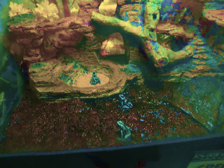

Color arithmetic is where you take two colors, do calculations on each of their channels, and get a different color.
While it is similar to mixing different colors of paint together, it won't always lead to the same results. For example, while adding red and blue together will create purple, adding yellow and blue together will create gray, not green.
The following code will perform arithmetic operations on two colors, then draw a rectangle on a canvas using the new, combined color:
var canvas = document.createElement("canvas");
canvas.width = 128;
canvas.height = 128;
var ctx = canvas.getContext("2d");
var color1 = [255, 63, 63];
var color2 = [63, 63, 255];
function mixColors(a, b) {
//This array automatically truncates values greater than 255 or less than 0.
let c = new Uint8ClampedArray(3);
//Add the color values
c[0] = (a[0] + b[0]) / 2;
c[1] = (a[1] + b[1]) / 2;
c[2] = (a[2] + b[2]) / 2;
return c;
}
let newColor = mixColors(color1, color2);
ctx.fillStyle = `rgb(${newColor[0]}, ${newColor[1]}, ${newColor[2]})`;
ctx.fillRect(0, 0, canvas.width, canvas.height);
document.body.appendChild(canvas)Addition is when you add each corresponding color channel of two colors together. If the resulting value is greater than 255, it is truncated. Copy and paste this into the color mixing function to see the sum of the two provided colors.
c[0] = a[0] + b[0];
c[1] = a[1] + b[1];
c[2] = a[2] + b[2];As you can see, adding red and blue together will create a purplish color.
Subtraction works in a similar way, but with a few key differences, such as the fact that values are now truncated if they're less than 0.
c[0] = b[0] - a[0];
c[1] = b[1] - a[1];
c[2] = b[2] - a[2];In this case, subtracting the first color from the second color results in a darker blue.
Since subtraction is not commutative, the order you put the values in is important. For example, if you subtract the second color from the first color, you get this:
Subtraction works in a similar way, but with a few key differences
c[0] = Math.abs(b[0] - a[0]);
c[1] = Math.abs(b[1] - a[1]);
c[2] = Math.abs(b[2] - a[2]);Now the colors are combined, instead of ending up darker depending on which one is the minuend and which one is the subtrahend.
Multiplying colors is different from adding or subtracting. If you multiply the colors as they are, the highest possible value is 255*255=65,025. As a result, it will be very difficult to not have white as the product, unless both of the colors you're using are very dark.
Luckily, there's a solution. By dividing each color component by 255, multiplying them together, then multiplying the result by 255, you can ensure that the resulting color value will always be between 0 and 255.
c[0] = (a[0] / 255) * (b[0] / 255) * 255;
c[1] = (a[1] / 255) * (b[1] / 255) * 255;
c[2] = (a[2] / 255) * (b[2] / 255) * 255;Since most of the components of the provided color values are somewhat low, the resulting color is probably darker than you're expecting:
An average is obtained by adding two colors together, then dividing the result by 2.
c[0] = (a[0] + b[0]) / 2;
c[1] = (a[1] + b[1]) / 2;
c[2] = (a[2] + b[2]) / 2;When applied to an image, RGB arithmetic can be used to create a number of interesting effects.
All of the operations you are about to see will be done on this image of a raven:
The following code will load an image as ImageData, calculate its negative, and display the result.
var canvas = document.createElement("canvas");
var ctx = canvas.getContext("2d");
var imgPromise = loadImage("Raven.jpg");
function filterImage(img) {
canvas.width = img.width;
canvas.height = img.height;
let newImage = ctx.createImageData(data.width, data.height);
for (i = 0; i < newImage.data.length; i += 4) {
newImage.data[i] = 255 - img.data[i];
newImage.data[i + 1] = 255 - img.data[i + 1];
newImage.data[i + 2] = 255 - img.data[i + 2];
newImage.data[i + 3] = 255;
}
ctx.putImageData(newImage, 0, 0);
}
imgPromise.then(filterImage);
document.body.appendChild(canvas);img.data[i] represents the Red component of the ImageData, so 255 - img.data[i] is the negative of that. This is done for each color channel, and the result is this:
To change the brightness, divide the Red, Green, and Blue values by a number larger than 1 to make the image darker, or multiply them by that number to make it brighter.
For example, to make the image half as bright, change the lines of code that inverted the image in the previous example to:
newImage.data[i] = img.data / 2;
newImage.data[i + 1] = img.data / 2;
newImage.data[i + 2] = img.data / 2;
newImage.data[i + 3] = 255;To make it twice as bright, use this:
newImage.data[i] = img.data * 2;
newImage.data[i + 1] = img.data * 2;
newImage.data[i + 2] = img.data * 2;
newImage.data[i + 3] = 255;Instead of dividing or multiplying, you can add or subtract a number to change the brightness. This gives you much more precise control over the results when making an image brighter...
newImage.data[i] = img.data + 50;
newImage.data[i + 1] = img.data + 50;
newImage.data[i + 2] = img.data + 50;
newImage.data[i + 3] = 255;...or darker:
newImage.data[i] = img.data - 50;
newImage.data[i + 1] = img.data - 50;
newImage.data[i + 2] = img.data - 50;
newImage.data[i + 3] = 255;One way to apply a greyscale effect to an image is to calculate a weighted average (here based in ITU Rec. 709) of all three color components and use this average as the value for the shade of gray. The eye is less sensitive to blue, so it gets a smaller coefficient, and more sensitive to green, so it gets a larger coefficient.
let c = 0.2126 * img.data[i] + 0.7152 * img.data[i + 1] + 0.0722 * img.data[i + 2];
newImage.data[i] = c;
newImage.data[i + 1] = c;
newImage.data[i + 2] = c;
newImage.data[i + 3] = 255;By removing channels, you can completely remove a color from an image. For example, this is what happens when you remove red from the raven picture:
newImage.data[i] = 0; //Red component set to zero
newImage.data[i + 1] = img.data[i + 1];
newImage.data[i + 2] = img.data[i + 2];
newImage.data[i + 3] = 255;If you remove green instead, you get this:
And if your remove blue, you get this:
Swapping two channels can also give some interesting results, potentially with completely different colors. For example, if you swap the red and green channels, the snow in the image becomes a shade of pink.
newImage.data[i] = img.data[i + 1]; //Red component
newImage.data[i + 1] = img.data[i]; //Green component
newImage.data[i + 2] = img.data[i + 2]; //Blue component
newImage.data[i + 3] = 255; //Alpha componentIf red and blue are swapped instead, you get a more orange-ish color.
Swapping green and blue will cause the image to appear green.
If you want a more vibrant shade of pink for some reason, you can achieve that by setting the blue channel to the same value as the red channel.
newImage.data[i] = img.data[i]; //Red component
newImage.data[i + 1] = img.data[i + 1]; //Green component
newImage.data[i + 2] = img.data[i]; //Blue component
newImage.data[i + 3] = 255; //Alpha componentThanks to the color conversion functions provided in this script, we can do HSL and HSV arithmetic on images.
This time, the examples will be done on this picture of a group of frogs:
Changing Hue under both the HSL and HSV models have pretty much the same results, so for no particular reason, this example will be done with the HSL model.
The following code will load an image, convert the color of each pixel to HSL, change the Hue by adding a certain value to it, then convert it back to RGB to display it.
var canvas = document.createElement("canvas");
var ctx = canvas.getContext("2d");
var imagePromise = loadImage("Froggies.jpg");
function drawImage(data) {
canvas.width = data.width;
canvas.height = data.height;
let newImage = ctx.createImageData(data.width, data.height);
for (i = 0; i < data.data.length; i += 4) {
let colorHSL = rgbToHsl(data.data[i], data.data[i + 1], data.data[i + 2]);
colorHSL[0] += (1 / 6);
let color = hslToRgb(colorHSL[0], colorHSL[1], colorHSL[2]);
newImage.data[i] = color[0];
newImage.data[i + 1] = color[1];
newImage.data[i + 2] = color[2];
newImage.data[i + 3] = 255;
}
ctx.putImageData(newImage, 0, 0);
}
imagePromise.then(drawImage);
document.body.appendChild(canvas);1/6 is used here to represent a hue shift of 60°, since the conversion function we use represents HSL color as three numbers between 0 and 1. Here are pictures of the results of shifting the hue by 0°, 60°, 120°, 180°, 240°, and 300°. 360° gives the same results as 0°, so it's not included here.
You can also set the entire image to a certain hue to give the entire image the same color. For example, here Hue is set to 0, which is a shade of red.
You can also change the saturation to make the image more colorful, or more like pastel, or monochrome. This time, the results are slightly different depending on if you use HSL or HSV.
For example, to increase the saturation by multiplying it by 2.5, change the lines of code that changed the hue to this:
let colorHSL = rgbToHsl(data.data[i], data.data[i + 1], data.data[i + 2]);
colorHSL[1] *= 2.5;
let color = hslToRgb(colorHSL[0], colorHSL[1], colorHSL[2]);As a result, the colors of the image become much brighter if they weren't bright already. The left image uses HSL, while the right image uses HSV.
If you multiply it by 0.5 instead, you decrease the saturation by halving it.
If saturation is set to 0, the image will be greyscale. The results are different for HSL and HSV color, but neither one is the same as the weighted-average formula discussed earlier.
And this is what you get if the saturation of every pixel is set to 50%. Every part of the image now looks equally colorful, for better or worse.
Finally, you can also change the brightness of an image using HSL or HSV color. Once again, they will have slightly different results.
let colorHSL = rgbToHsl(data.data[i], data.data[i + 1], data.data[i + 2]);
colorHSL[2] /= 2;
let color = hslToRgb(colorHSL[0], colorHSL[1], colorHSL[2]);You can also decreased the brightness by subtracting a value from it instead:
let colorHSL = rgbToHsl(data.data[i], data.data[i + 1], data.data[i + 2]);
colorHSL[2] -= (50 / 255);
let color = hslToRgb(colorHSL[0], colorHSL[1], colorHSL[2]);And setting the brightness of all pixels to 50% give you this:
Most of what you saw here can be done with much less effort via the canvas context's filter property, but where's the fun in that?